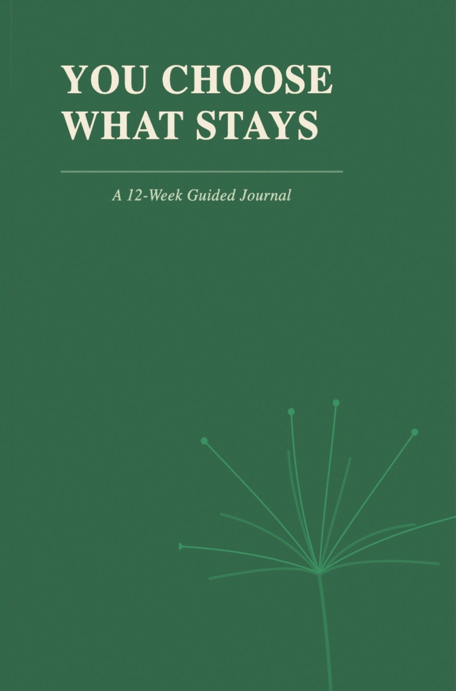
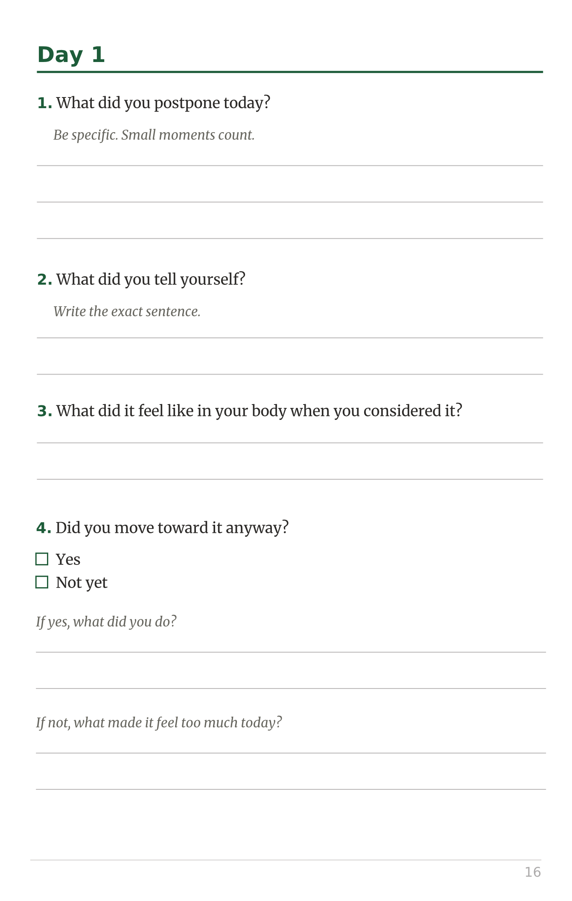
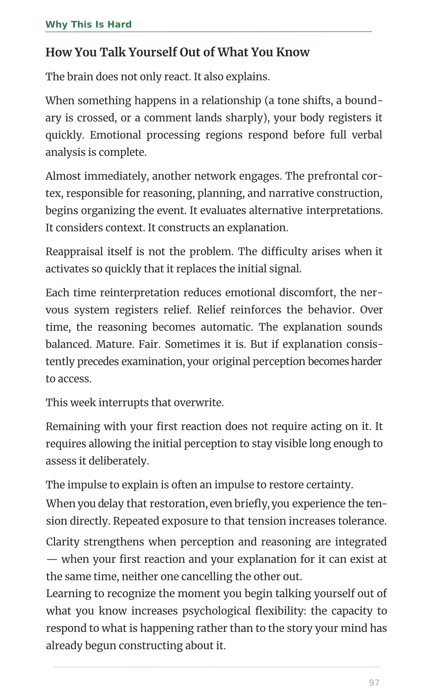
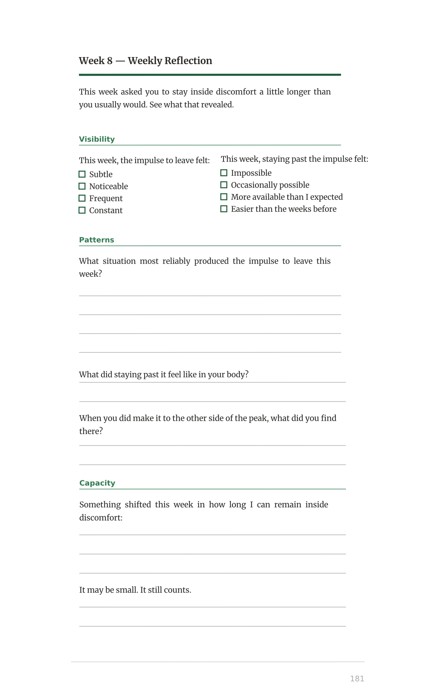
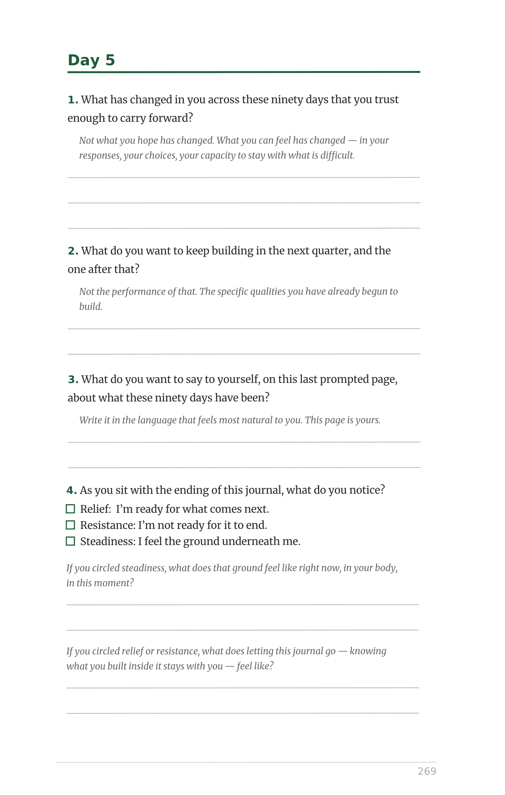
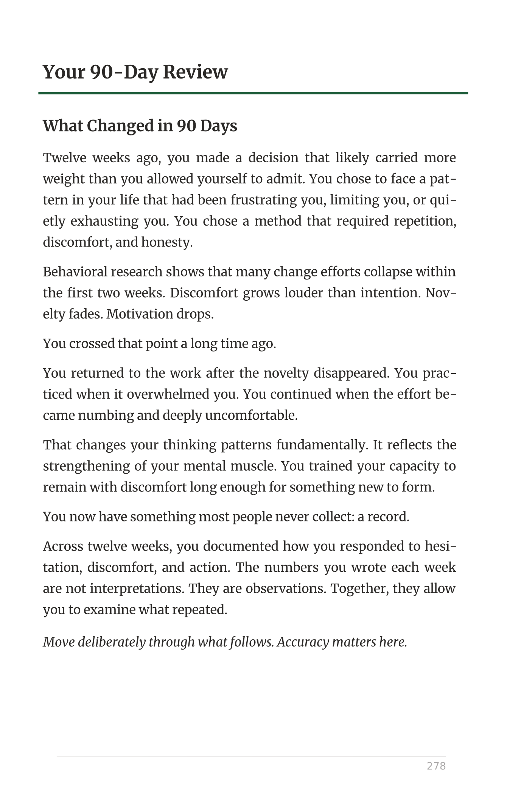

You Choose
What Stays
This is the journal for people who are done with journals that ask them to list three things they're grateful for.
Twelve weeks. Five daily pages, weekly reflections, pattern tracking, and a 90-day review. Designed to work with how change actually happens in you, not around it.
It assumes intelligence, respects your time, and asks only for honesty. Available whenever you need it: at six in the morning, at midnight, in the ten minutes before the day asks everything of you again.

The Methodology
From inside the journal

Phase 1 — Seeing your patterns
The journal is built around four phases of work. In the first three weeks, you develop the capacity to see your own patterns while they are happening, not in retrospect, but in the moment.
Twelve weeks of those numbers tell you something a single week cannot: where your patterns are consistent, where they shift under pressure, and where the work has already begun to hold.

Phase 2 — Understanding what drives them
Weeks four through seven shift the focus to what is driving those patterns: the internal voice, the fear of consequence, the part that resists change because change registers as threat.
Five daily pages, weekly reflections, pattern tracking, and a 90-day review: a designed sequence built on three decades of clinical and coaching practice, structured around how behavioral change actually moves in a person.

Phase 3 — Practicing new capacities
In weeks eight through eleven, you stop analyzing and start practicing: staying longer inside discomfort, acting earlier than the hesitation allows, and keeping small promises to yourself until self-trust is no longer a strange concept.
We built it because the methodology has long existed in clinical practice and coaching sessions, yet most people haven't had access to either.

Phase 4 — Finding out what moved
By Week 12, you have spent eleven weeks building specific behavioral capacities. You know the moment hesitation arrives before it has fully formed. You can feel when you are about to let discomfort make the decision for you. You have stayed inside difficult conversations longer than you would have on Day 1. You have acted before you felt ready, and found out that ready was not what you were waiting for. These capacities are no longer locked behind knowing. You have lived them. Week 12 is where you find out how much of what you built has moved from knowing into becoming.

Phase 5 — What 90 days reveal
Each week produces three numbers. Visibility: how clearly you could see your patterns in real time. Action: what you did when you saw them. Tolerance: how long you could stay inside discomfort before needing to resolve it. Twelve weeks of those numbers tell you something a single week cannot: where your patterns are consistent, where they shift under pressure, and where the work has already begun to hold. The 90-day review at the back of the journal uses your twelve weeks of pattern data to map that distance precisely.